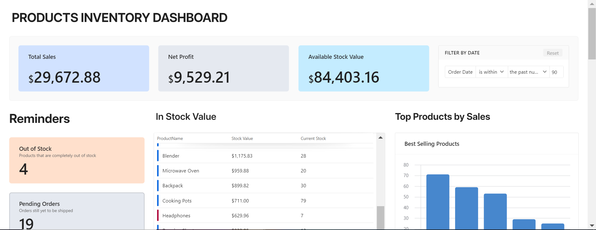

The Creator
1. Overview
The Creator is an AI-powered writing assistant that specializes in drafting clear, engaging, and impactful text for various contexts. It can craft polished emails, compelling stories, blog content, marketing copy, and more. By leveraging specialized tools, The Creator guides users through the entire writing process—from brainstorming to final proofreading—delivering professional and brand-consistent communication.
2. Key Features
- Versatile Writing Styles — Adapts to different tones—formal, conversational, friendly, or persuasive—to match your audience and purpose.
-
Drafting & Editing Tools:
- draftEmail: Creates concise and professional emails, including subject lines and calls to action.
- draftContent: Crafts blog posts, newsletters, landing page copy, and more.
- draftStory: Focuses on storytelling, developing characters, plots, and narratives.
- rewriteWizard: Refines existing text to enhance clarity, tone, or style without losing the original essence.
- languageCheck: Conducts grammar and spelling checks for high-quality, error-free content.
- Scalable Workflows — Integrates seamlessly with Slack, Teams, WhatsApp, Discord, Telegram, or your own website, and can be extended to handle new writing formats or custom brand voice guidelines.
- User-Friendly Guidance — Prompts users for clarifications and provides suggestions to improve readability and impact.
- Professional Tone & Branding — Maintains brand consistency by following style guides or tone requirements set by the user.
3. How It Works
- Natural Language Understanding: Users request content in plain language, and The Creator interprets whether it needs to draft an email, story, or something else.
- Tool Invocation: The Creator invokes the appropriate tool (e.g., draftEmail, draftStory, etc.) to handle the request.
- Draft Generation: It produces an initial draft that reflects the specified style and context.
- Refinement & Checks: Uses languageCheck to ensure grammatical accuracy and can refine drafts upon user feedback.
- Delivery: Provides the final text in a clean format, ready to be copied or used in emails, documents, or web pages.
4. Integrations
- Slack — Quickly draft messages for teams or channels and collaborate in real time.
- WhatsApp / Teams — Chat with The Creator on mobile or desktop, perfect for on-the-go writing tasks.
- Telegram / Discord — Use slash commands or mentions to produce or refine content instantly.
- Website / Intranet — Embed The Creator as a chatbot or web-based assistant on portals for 24/7 writing support.
5. Prompt Design & Structure
- Role Definition — Positions The Creator as an AI-driven content generator and writing specialist.
- Important Information — Gathers context like current date/time or user ID for personalization.
- Tools & Usage — Lists the various tools (e.g., draftEmail, draftStory) and how to invoke them.
- Rules — Ensures consistency in voice and style, asking for clarifications if instructions are incomplete.
- Examples — Provides sample requests and how The Creator responds.
- Knowledge — Encourages referencing style guides, policy documents, or brand guidelines for accuracy.
6. Technical Stack
- AI Model — Built on an LLM (e.g., GPT-based architecture), fine-tuned for creative and technical writing.
- Orchestration Layer — Uses Python or Node.js to process user queries, manage conversation state, and route to the correct tools.
- APIs & Databases — May save drafted content or fetch style guidelines, integrating with Slack, Teams, or web frameworks.
- Security & Permissions — Protects private or proprietary data using secure tokens and authorized access for sensitive content.
7. Project Impact
- Elevated Communication — Ensures all emails, announcements, and marketing copy are well-crafted and error-free.
- Creative Empowerment — Helps anyone produce high-quality stories, messages, and web copy, regardless of writing ability.
- Time & Resource Savings — Automates routine writing tasks, reducing editing time and reliance on external copywriters.
- Easy Collaboration — Allows for real-time drafting and editing within popular chat environments.
8. Future Enhancements
- Multilingual Support — Extend capabilities to other languages for global teams.
- Advanced Style Guides — Integrate deeper brand guidelines or style preferences, including voice analyzers for formal vs. casual tone.
- Document Generation — Draft entire proposals, whitepapers, or other large documents.
- Tone Adaptation with Context — Incorporate sentiment analysis to fine-tune content for empathy, enthusiasm, or urgency.
9. Conclusion
The Creator transforms the way teams handle writing tasks, offering a single hub for generating email drafts, short stories, blog posts, and persuasive marketing copy. Its specialized tools simplify the entire writing process and ensure consistent, high-quality outputs. Implementing The Creator in your workflow showcases expertise in prompt engineering, system integration, and AI-driven content generation—all while helping users communicate with clarity, creativity, and impact.